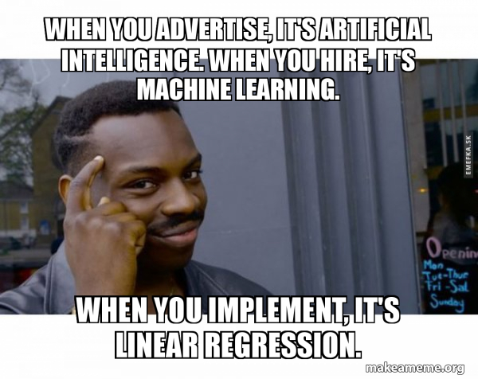
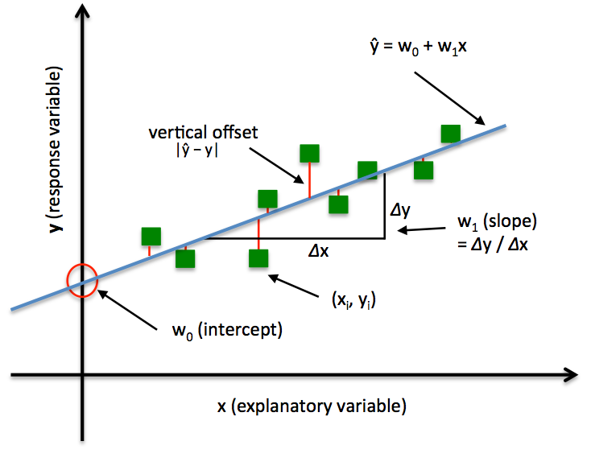

In this assignment, you will be given statistical problems associated with two different datasets, and determine the right statistical tools to come up with the answer.
In Part 1 of this assignment, you will use Python modules related to Linear Regression to determine the relationship between independent and dependent variables in a bike sharing dataset.
In Part 2 of this assignment, you will use Python modules for t-test and chi-square tests to come up with answers for certain statistical questions.
You can click here to get the stencil code for Homework 4. Reference this guide for more information about Github and Github Classroom.
The data is located in the data folder. To ensure compatibility with the autograder, you should not
modify the stencil unless instructed otherwise. For this assignment, please write your solutions in
the respective .py files and writeup.md. Failing to do so may hinder with the autograder and result in
a low grade.
Execute Code: First,
ssh into the department machine by running
ssh [cs login]@ssh.cs.brown.edu and typing your password when
prompted. Then, navigate to
the assignment directory and activate the
course virtual environment by running
source /course/cs1951a/venv/bin/activate. You can now run your code for the
assignment. To deactivate this virtual environment,
simply type deactivate.
Python requirements: Python 3.7.x. Our Gradescope Autograder uses Python 3.7.9. Using some other version of Python might lead to issues installing the dependencies for the assignment.
Virtual environment:
create_venv.sh script in Homework 0, activate your virtual environment using cs1951a_venv or source ~/cs1951a_venv/bin/activate anywhere from your terminal. If you have installed your virtual environment elsewhere, activate your environment with source PATH_TO_YOUR_ENVIRONMENT/bin/activate.
Execute Code: After activating your virtual environment, you are free to run your program in the command line.
A significant portion of this assignment is going to be done in writeup.md. You can check out StackEdit, Dillinger, or Typora as possible tools to edit and view Markdown files. You can refer to this guide for more information on Markdown syntax.
In writeup.md, we have presented you with different questions, divided into three parts: Regression, Statistical Tests, and Socially Responsible Computing. Many of the questions require you to write and run some code (in regression.py, run_tests.py, and stats_tests.py) to come up with the answer.
In addition to completing all the TODOs in the code files aforementioned, you will need to write down your answer to the questions in writeup.md. As per usual, you will submit your code and write up files onto Gradescope.
Regression is used to predict numerical values given inputs. Linear regression attempts to model the line of best fit that explains the relationship between two or more variables by fitting a linear equation to observed data. One or more variables are considered to be the independent (or explanatory) variables, and one variable is considered to be a dependent (or response) variable. In simple linear regression, there is one independent variable and in multiple linear regression, there are two or more independent variables.
Before attempting to fit a linear model to observed data, a modeler should first determine whether or not there is a linear relationship between the variables of interest. This does not necessarily imply that one variable causes the other. Remember, correlation does not necessarily imply causation. For example, moderate alcohol consumption is correlated to longevity. This doesn’t necessarily mean that moderate alcohol consumption causes longevity. Another independent characteristic of moderate drinkers (extrovert lifestyle) might be responsible for longevity. Regardless, there is some association between the two variables. The goal in linear regression is to tease apart whether a correlation is likely to be a causal relationship, by controlling for these other variables/characteristics that might be confounding the analysis.
In simple linear regression, scatter plot can be a helpful tool in visually determining the strength of the relationship between two variables. The independent variable is typically plotted on the x-axis and the dependent variable is typically plotted on the y-axis. If there appears to be no association between the proposed explanatory and dependent variables (i.e., the scatter plot does not indicate any clear increasing or decreasing trends), then fitting a linear regression model to the data probably will likely not provide a useful model. (Note this is not always the case--just as confounding variables might lead a correlation to appear stronger than it is, it might also lead a relationship to appear weaker than it is.)
Shown in the picture below, in simple regression, we have a single feature x and weights w0 for the intercept and w1 for slope of the line. Our goal is to find the line that minimizes the vertical offsets, otherwise known as residuals. In other words, we define the best-fitting line as the line that minimizes the residual sum of squares (SSR or RSS) between our target variable y and our predicted output over all samples i in our training examples n.
A valuable numerical measure of association between two variables is the correlation coefficient , which is a value between -1 and 1 indicating the strength of the association of the observed data for the two variables. A simple linear regression line has an equation of the form Y = a + bX, where X is the independent (explanatory) variable and Y is the dependent variable. The slope of the line is b, and a is the intercept (the value of y when x = 0). A multiple linear regression line has an equation of the form Y = a + b_1X_1 + b_2 X_2 + … + b_n X_n for n independent variables.
Another useful metric is the R-squared value. This tells us how much of the variation in Y can be explained by the variation in X. The value for R-squared ranges from 0 to 1, and the closer to 1, the greater proportion of the variability in Y is explained by the variability in X. For more explanation on R-squared and how to calculate it, read here (this will be very helpfulf)
Do not confuse correlation and regression. Correlation is a numerical value that quantifies the degree to which two variables are related. Regression is a type of predictive analysis that uses a best fit line (Y = a + bX) that predicts Y given the value of X).
Inside the data folder, bike-sharing.csv contains data of a two-year historical log corresponding to years 2011 and 2012 from Capital Bikeshare system, Washington D.C., USA. There are 11 different independent variables that you are attempting to predict and one dependent variable (the cnt of use of bike.)
In this part of the assignment, you will need to edit regression.py and writeup.md. In particular, you will need to:
regression(). Details on the input and output of the function, as well as what you need to do to complete the function, can be found in the code file. regression on the bike sharing dataset, using your own defined dependent variable and set of independent variables. We have provided you with a helper function, train_test_split (imported from util.py) that you can use to help with this part of the assignment.
writeup.md, with reference to the results from the regression models that you run on the bike sharing dataset.
You can go into the file and edit the list of independent variables that you want to run the program on. Then, you will call python3 regression.py (after activating the environment) to run your code. If you have implemented the function regression() properly, it should print out the summary of your regression model, which will help with your write up in writeup.md.
In util.py, we have provided some functions that might be useful for you while writing the code in regression.py. In particular, the function train_test_split() will help you with splitting your dataset DataFrame into a
train DataFrame and a test DataFrame, which can be use as inputs to your regression() function.
Also inside the data folder, college-data.csv contains a constructed dataset of 435 students enrolled at a university in the United States. You can read more about the attributes available in this dataset in README-college-data.md.
In writeup.md, we have presented you with five different scenarios, where for each type of t-test (one sample, two sample, and paired), there would be exactly one scenario that would be best mapped to that scenario. The remaining two is best suited for a chi-square test for independence.
In this part of the assignment, you will need to modify stats_tests.py, run_tests.py, and writeup.md. In particular, you will need to (in this particular order):
one_sample_ttest, two_sample_ttest, paired_ttest, and chisquare_independence_test. Details on the input and output of the function, as well as what you need to do to complete the function, can be found in the code file (stats-tests.py).
In run_tests.py, there are five different functions according to each presented scenario presented in writeup.md: scenario_one, scenario_two, ..., scenario_five. In each of these, you will need to make a decision on what kind of test function to run, construct the necessary variables to pass into the test function calls, and return the test statistics and the p-values that come from the tests.
To run the tests that you have written for each scenario, you can use the following command format after activating the virtual environment: python3 run_tests.py -d /PATH/TO/DATA.csv -s SCENARIO. SCENARIO should be a string that is in this list: ["one", "two", "three", "four", "five", "all"], and if you select "all", all the tests for all the scenarios will be run. By default, the flag -d is set to be ./../data/college-data.csv, and you most likely will not need to modify the path. Therefore, the command that you can execute can look something like: python3 run_tests.py -s one, or python3 run_tests.py -s all.
writeup.md, answer all Part 2 questions. After having written your t-test and chi-square tests, print out the necessary data (e.g., test statistics and p-values) to support your answers in the writeup.
In util.py, we have provided some functions that might be useful for you while writing the code in run_tests.py. In particular, drop_incomplete_rows helps with dropping rows in a DataFrame that contains either null values or
an empty string. You may want to call this to filter out unwanted rows before performing any statistical tests. timestr_to_seconds helps with converting time periods of a string format hh:mm:ss (e.g., 00:01:17) to be in seconds insted (e.g., 77). These functions
will come in handy when you are preparing the variables to pass into the statistical test functions that you have prepared.
writeup.md.
While performing regression analysis, data scientists make several choices that require more than the data alone. Understanding the context of data is necessary to avoid statistical misinterpretation (along with many other issues!).
The goal of the following questions is to:
Your responses should be thoughtful, provide justification for your claims, and be concise but complete. See the response guide for more guidance.
bike-sharing.csv data that are not being shown in the dataset? List at least 3 possible factors. The factors could be additional variables or factors that are not quantifiable. bike-sharing.csv data into groups before analyzing it. This category may or may not be represented in the existing dataset. Describe a context (project, question, goals, etc.) for which separating the data by that category is important and explain why separating the data is the right choice for that context. bike-sharing.csv or present your findings.
There are a plethora of other statistical mishaps and manipulations beyond what can reasonably fit in one assignment. If you're interested in further reading, consider learning more:
After finishing the assignment, run python3 zip_assignment.py in the command line from
your
assignment directory, and fix any issues brought up by the script.
After the script has been run successfully, you should find the file
stats-submission-1951A.zip in your assignment directory. Please submit this zip
file on
Gradescope under the respective assignment.
Made by Qian Zhang, Aakansha Mathur, Evan Dong, and Nam Do in Summer 2021, with the first part and most of the STA component being adapted from the previous iterations of the course.
Bike Sharing Dataset: Fanaee-T, Hadi, and Gama, Joao, "Event labeling combining ensemble detectors and background knowledge", Progress in Artificial Intelligence (2013): pp. 1-15, Springer Berlin Heidelberg, doi:10.1007/s13748-013-0040-3.